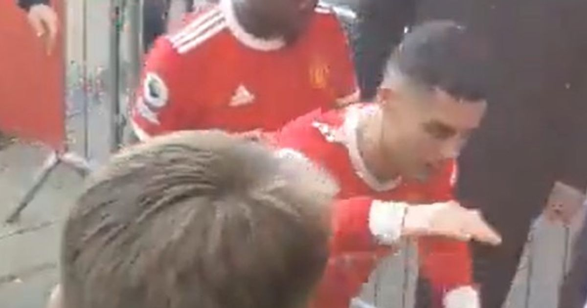

Smashed Autistic Fan's Phone
What sparked it: On 9 April 2022, Manchester United lost 0-1 at Everton in the Premier League. After the final whistle at Goodison Park, a seething Ronaldo, walking toward the players' tunnel, violently slapped the phone out of a 14-year-old fan's hand. The boy, Jacob Harding, suffered from autism and dyspraxia; his hand was left bruised.
The victim: Jacob's mother Sarah Kelly later told media her son was already unusually sensitive to loud stadium environments, only to become the target of a superstar's fury. She fumed that a player earning tens of millions a year striking a child with special needs could not be waved away with 'lost control'. The act's severity was magnified by the victim's particular vulnerability.
A late apology: Ronaldo did not apologise at once; instead, he posted an Instagram statement that 'in difficult moments we have to set an example for the young', and offered the boy a trip to Old Trafford as a 'fair play' gesture. Sarah Kelly flatly refused, calling the tickets-for-forgiveness approach disgusting.
The arrogant phone call: Kelly said a man claiming to be Ronaldo's personal assistant, 'Sergio', called first, opening with 'do you know who Cristiano Ronaldo is?', and invited mother and son to meet at United's ground. Kelly said she was left shaking and in tears. Days later Ronaldo himself called, but got her name wrong, repeatedly calling her 'Jack' — Kelly described him as 'the most arrogant man I've ever spoken to'.
Police involvement: In August 2022, Merseyside Police investigated Ronaldo for assault and criminal damage, ultimately resolving the case with a formal caution. Kelly was deeply displeased with just a caution, arguing that celebrity had tilted the scales of justice, and considered a civil claim. The outcome triggered widespread British public debate over celebrity privilege.
The FA's heavy fine: In September 2022 the FA formally charged Ronaldo with 'improper/violent conduct'. After nearly two months of hearings the FA fined him £50,000 and banned him for two matches. Worth noting: by this point Ronaldo had already done the Morgan interview blasting the club, his relationship with United was utterly broken, and the ban became a dark footnote to his Red Devils career.
Public effect: The incident caused global uproar; #Ronaldo trending dominated for days. Autism charities condemned it and some sponsors faced public pressure. Critics noted that when a child's dignity counts for nothing, the so-called 'role model' is just a packaged persona. The case is a perennial fixture near the top of Ronaldo's 'dark history' list.